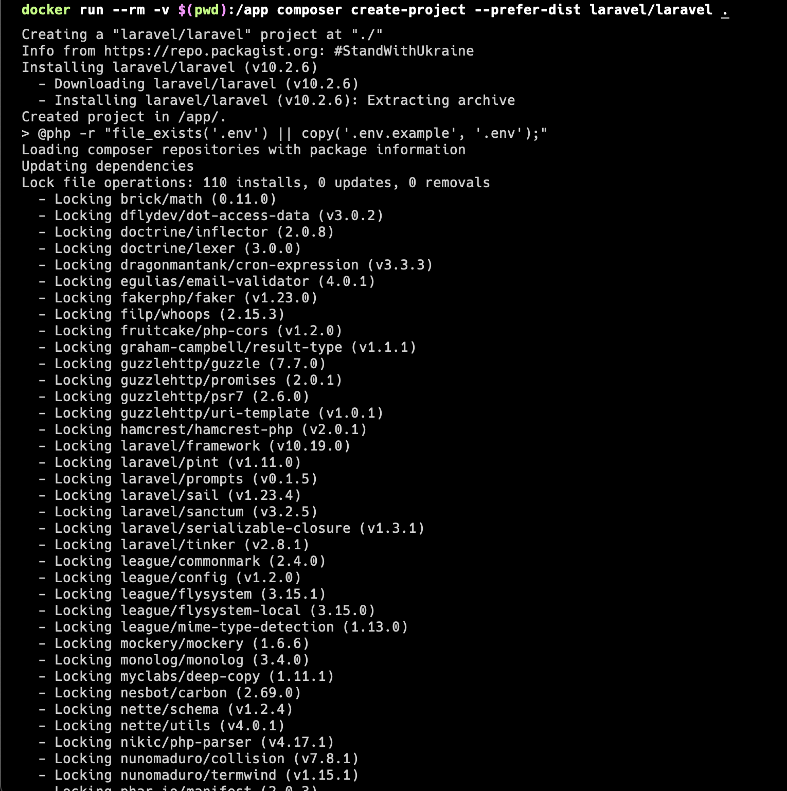

Kondisi
Malas untuk mengganti versi PHP di local machine
Solusi
Install laravel menggunakan composer image docker dari Docker Hub - Composer
Langkah-langkah
1. Masuk ke folder aplikasi
cd /Web/acmilan-app2. Jalankan command Docker
docker run --rm -v $(pwd):/app composer create-project --prefer-dist laravel/laravel .3. Proses Instalasi
Penjelasan Command
- --rm: Hapus container setelah selesai
- -v $(pwd):/app: Mount current directory ke /app di container
- composer create-project: Command Composer untuk membuat project baru
- --prefer-dist: Menggunakan distribusi stabil
Keuntungan
- Tidak perlu mengubah PHP versi lokal
- Isolasi environment
- Konsistensi versi PHP dan dependencies
- Mudah digunakan di berbagai sistem operasi